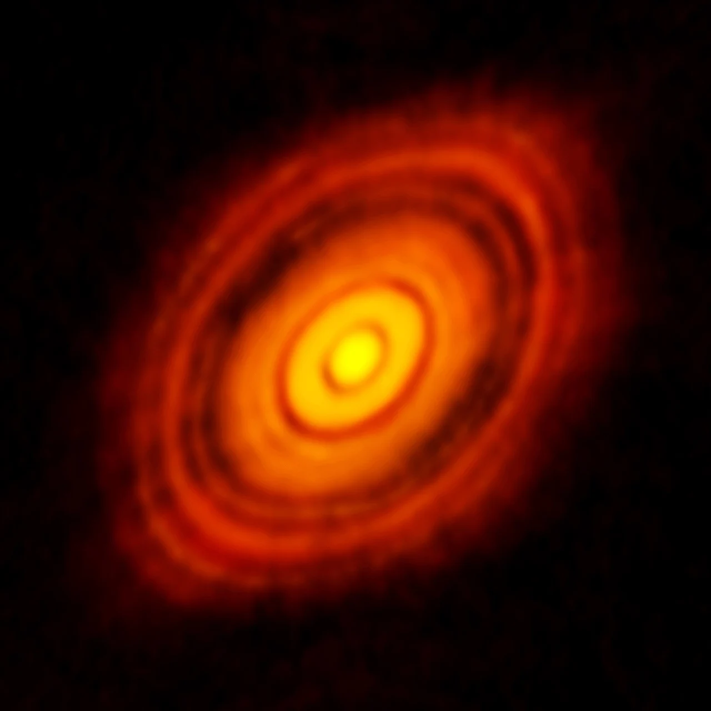
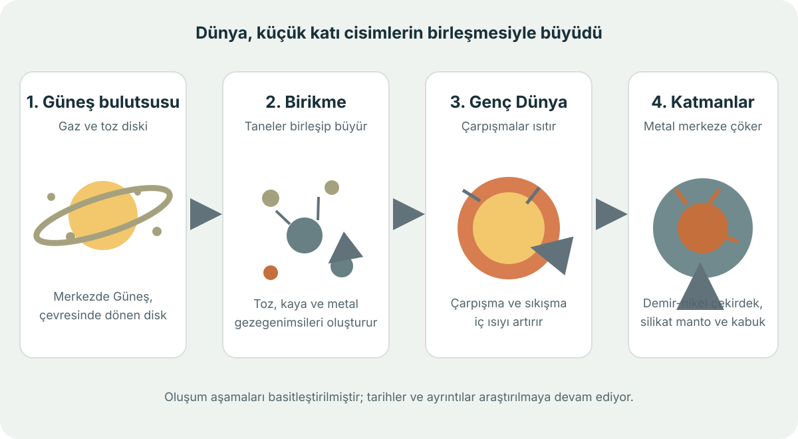
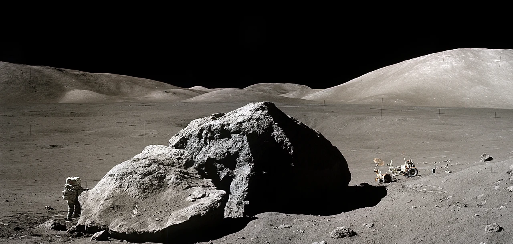

Dünya, yaklaşık 4,54 milyar yıl önce genç Güneş'in çevresindeki toz ve kaya parçalarının kütleçekimiyle birleşmesi sonucu oluştu. Bu, tek seferde gerçekleşen bir olay ya da laboratuvardaki gibi tek bir kimyasal tepkime değildi. Küçük katı parçalar çarpışarak büyüdü; çarpışmaların ve iç ısının etkisiyle eriyen genç gezegen, zamanla metal çekirdeğini ve kayalık katmanlarını oluşturdu. Bilim insanları bu tarihi, meteoritle ve Dünya'nın en eski mineralleriyle yapılan izotop ölçümlerini karşılaştırarak belirliyor.[1][2]
Dünya'nın oluşumu ne zaman başladı ve ne kadar sürdü?
Güneş Sistemi'nin oluşumu yaklaşık 4,6 milyar yıl önce başladı. Daha hassas ölçümlerde, meteoritte bulunan Güneş Sistemi'nin en eski katı tanelerinin yaşı yaklaşık 4,567 milyar yıl olarak alınır. Dünya'nın yaşı ise yaklaşık 4,54 milyar yıl kabul edilir. Bu sayı, bugün elimizde bulunan tek bir Dünya kayasının yaşını ölçmekten gelmez: Dünya'nın ilk kayaları büyük ölçüde yeniden işlenmiş veya yok olmuştur. Yaş hesabı, Dünya ve meteorite ait kurşun izotoplarını ve diğer radyometrik ölçümleri birlikte değerlendirir.[1][2]
“Tam olarak hangi gün başladı?” veya “oluşması tam kaç yıl sürdü?” sorularının tek bir kesin yanıtı yok. Dünya, toz ve gezegenimsilerin yörüngelerde birleşmesiyle aşamalı biçimde büyüdü; bu birikim ve çekirdeğin ayrışması on milyonlarca yıla yayıldı. Ay'ı oluşturan büyük çarpışmanın zamanı için farklı izotop ve dinamik modelleri farklı tarihler verir. NASA'nın Apollo örneklerinden aktardığı bir tahmin, Ay'ın Güneş Sistemi'nin oluşumundan yaklaşık 60 milyon yıl sonra meydana geldiğini söyler. Bu tür tarihler, Dünya'nın büyümesinin tek bir anda bitmediğini gösterir; kesin zaman çizelgesi araştırılmaya devam ediyor.[3][4]
Başlangıç noktası: genç Güneş'in çevresindeki bulutsu
Güneş ve gezegenler, yoğun bir yıldızlararası gaz ve toz bulutunun kütleçekimiyle büzülmesiyle oluştu. Madde döndükçe merkezde genç Güneş, çevresinde ise gezegenlerin ham maddesini taşıyan yassı bir disk meydana geldi. Diskin iç kesimleri genç Güneş'e yakın olduğu için sıcaktı; burada kayaç ve metal oluşturabilen maddeler katı hâlde kalabilirken su buzu gibi uçucu maddelerin önemli bir bölümü daha soğuk dış bölgelere doğru yoğunlaşabiliyordu. NASA, iç Güneş Sistemi'ndeki kayaç gezegenlerin bu sıcaklık farkıyla ilişkisini açıklar.[5]
Güneş Sistemi'nin büyük bölümü hidrojen ve helyumdan oluşsa da Dünya gibi iç gezegenler, diskteki katı malzemelerin birikmesiyle şekillendi. Bu malzemeler arasında mikroskobik mineral ve metal taneleri, daha sonra da asteroit benzeri gezegenimsiler vardı. Dünya'ya “düşen” parçaların hepsi aynı değildi: Farklı yörüngelerde, sıcaklıklarda ve kimyasal koşullarda oluşmuş cisimler zaman içinde birleşti.
Hangi elementler ve maddeler etkili oldu?
“Hangi kimyasallar Dünya'yı oluşturdu?” sorusunu bir karışım tarifi gibi düşünmemek gerekir. Dünya, hazır bir bileşik şişesinden değil; elementleri ve mineralleri içeren katı cisimlerin çarpışıp birleşmesinden oluştu. Isı ve basınç arttıkça bu maddeler eridi, birbirleri içinde çözüldü ya da yoğunluklarına ve kimyasal ilgilerine göre farklı katmanlara ayrıldı.
Yoğun metalik demir-nikel damlacıkları eriyen genç Dünya'nın merkezine doğru battı ve çekirdeğin ana bileşenlerini oluşturdu.
Bu elementler, demir içeren olivin ve piroksen gibi silikat minerallerinin yapı taşlarıdır; manto ve kabuk büyük ölçüde kayalık malzemeden oluşur.
Hidrojen, karbon ve azot içeren maddeler ile su, Dünya'nın yapı taşlarında ve sonradan gelen cisimlerde bulunuyordu. Volkanik gaz çıkışı da erken atmosferin oluşumuna katkıda bulundu.
Erime sırasında elementlerin her biri aynı davranmadı. Demir gibi metalle daha kolay birleşen bazı elementler çekirdeğe taşınırken, silikat minerallerinde kalmayı tercih edenler mantoda yoğunlaştı. Dünya'nın bugünkü katmanlı yapısı hem fiziksel yoğunluk farklarının hem de kimyanın sonucudur. Çekirdeğin ana maddesi demir ve nikeldir; manto ise ağırlıklı olarak demir ve magnezyum içeren silikat kayaçlardan oluşur.[6]
Tozdan gezegene: oluşumun aşamaları

Bu süreçte çarpışmalar yalnızca madde eklemedi; aynı zamanda büyük miktarda enerji açığa çıkarıp yüzeyin ve iç kısmın ısınmasına yol açtı. Genç Dünya'nın bazı dönemlerde geniş ölçüde erimiş olması, yoğun metalin silikat malzemeden ayrılıp merkeze ilerlemesini kolaylaştırdı. Gezegen soğudukça ilk kabuklar oluştu, volkanik gaz çıkışı ve yüzeye ulaşan uçucu maddeler atmosfer ile su döngüsünün temellerine katkı verdi.[6]
Dünya'nın katmanları ve suyun kökeni
Bugün Dünya'yı kabuk, manto ve çekirdek olarak tanımlarız; bunlar bir anda hazır hâle gelmedi. Metalin aşağı çökmesi ve kayalık silikatların üstte kalması, ilk kimyasal ayrışmanın temeliydi. Daha sonra soğuyan yüzeyde kabuk oluştu. Gezegenin ilk dönemlerinden kalma kayaçların çoğu jeolojik süreçlerle değişti; Batı Avustralya'da bulunan yaklaşık 4,4 milyar yıllık zirkon taneleri ise erken kabuğun ve suyla etkileşen ortamların izlerini taşıyabilir. Bunlar Dünya'nın tam yaşını tek başına vermez, ancak yüzeyin çok erken dönemde soğumaya başladığına dair ipuçlarıdır.[2]
Okyanuslardaki suyun kaynağı da tek bir kaynağa indirgenemez. Dünya'nın içinden volkanik gaz çıkışıyla salınan su buharı, su taşıyan asteroit benzeri cisimlerin katkısı ve erken dönemdeki diğer süreçler birlikte değerlendirilir. Kuyruklu yıldızların ne kadar katkı yaptığı ve suyun ne zaman yüzeyde kalıcı hâle geldiği hâlâ araştırılır; Dünya'nın suyunun tamamının tek tür bir gök cisminden geldiğini kesin bir gerçek gibi sunmak doğru olmaz.
Ay'ı oluşturan çarpışma: önemli ama ayrıntıları tartışmalı

En çok kabul gören açıklamaya göre Ay, genç Dünya'ya Mars büyüklüğüne yakın bir gök cisminin çarpmasının ardından yörüngeye saçılan maddelerden oluştu. Apollo görevlerinde getirilen Ay kayaçlarının kimyasal ve izotop özellikleri, Dünya ile Ay'ın ortak bir oluşum geçmişi olduğu fikrini destekledi. Ancak çarpan cismin özellikleri, çarpışmanın geometrisi ve kesin zamanı konusunda araştırmalar sürüyor. Günümüzde tek bir çarpışma modeli bütün ayrıntıları tartışmasız biçimde açıklamıyor.[3]
Özetle
Dünya, yaklaşık 4,54 milyar yıl önce Güneş'in çevresindeki katı toz, mineral ve metal parçalarının kütleçekimiyle birleşmesiyle oluştu; büyümesi ve iç katmanlarına ayrılması on milyonlarca yıla yayıldı. Demir ve nikel çekirdekte yoğunlaşırken oksijen, silisyum ve magnezyum içeren silikatlar kayalık manto ve kabuğu oluşturdu. Su ve atmosferin gelişimi birden çok kaynağa ve uzun bir jeolojik tarihe bağlı. Bilim, bu sürecin ana hatlarını ortaya koysa da kesin başlangıç anı, süresi ve bazı kimyasal kaynaklar hâlâ yeni ölçümlerin konusu.
Kaynaklar ve ileri okuma
- NASA, “Solar System Facts — Formation”. Güneş Sistemi'nin gaz ve toz bulutundan oluşması ve gezegenlerin birikerek büyümesi.
- U.S. Geological Survey (USGS), “Age of the Earth”. Dünya'nın yaklaşık 4,54 milyar yıllık yaşının radyometrik ve meteorit verileriyle belirlenmesi; eski zirkonlar ve Dünya'nın en yaşlı kayaçları.
- NASA, “Moon Formation”. Apollo Ay örneklerinin büyük çarpışma hipotezine katkısı ve Ay oluşum zamanı için yaklaşık 60 milyon yıllık tahmin.
- Hiroko Nagahara ve Kazuhito Ozawa, “The timescale of accretion and core formation of the Earth inferred from Hf-W isotope systematics”, Proceedings of the Japan Academy, Series B, 77(9), 2001. Dünya'nın birikme ve çekirdek oluşum süresinin izotop modelleriyle değerlendirilmesi.
- NASA, “Earth Facts”. Dünya'nın kayalık gezegen olarak yapısı ve Güneş Sistemi'ndeki oluşum bağlamı.
- U.S. Geological Survey (USGS), “The Interior of the Earth”. Kabuk, manto ve çekirdeğin yapısı ve bileşimine ilişkin genel bakış.
- ALMA (ESO/NAOJ/NRAO), “HL Tau protoplanetary disk”, CC BY 4.0. HL Tauri çevresindeki gezegen öncesi diskin radyo gözlemi.
- Eugene A. Cernan/NASA; panoramik birleştirme: Grunpfnul, Wikimedia Commons, “Apollo 17 ... Tracy's Rock”, Public Domain.